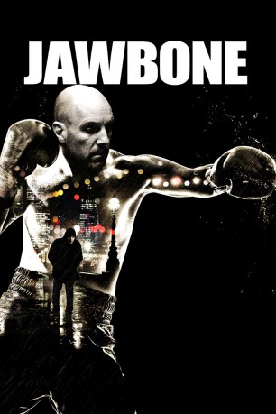

#8983 Jawbone
 
 IMDB-Wertung: 6.4 / 10
IMDB-Wertung: 6.4 / 10  Tomatometer: 96
Tomatometer: 96  Metascore: 0
Metascore: 0 
Die erfolgreichen Zeiten seiner Jugend sind für Boxer Jimmy McCabe (Johnny Harris) längst vergangen. Obwohl er nie die Hoffnung verliert, scheint er doch immer an den falschen Stellen danach zu suchen. Als er schließlich ganz unten angekommen ist, bleibt ihm nur der Rückhalt seines Boxclubs. Der Besitzer Bill (Ray Winstone), Kampfpromoter Joe (Ian McShane) und Corner Man Eddie (Michael Smiley) stellen die einzige Familie dar, die ihm noch bleibt. Gemeinsam mit ihnen nimmt er das Training auf und riskiert sein Leben, um sich einen respektierten Platz in der Box-Szene zurückzuerobern.
BDRIP DUBBED
Jahr: 2017
Dauer: 95 Minuten
FSK: 16
Land: England Studio: Ascot Elite Entertainment GroupTonspuren: DD2.0 - ,
Untertitel:
Auflösung: 1080p (1920x1040) Größe: 6871 MB
Genre: Action, Drama, Sport
Regisseur: Thomas Napper
Drehbuch: Johnny Harris
Soundtrack: Paul Weller
Darsteller:
 Ian McShane als Joe Padgett
Ian McShane als Joe Padgett Ray Winstone als William Carney
Ray Winstone als William Carney Johnny Harris als Jimmy McCabe
Johnny Harris als Jimmy McCabe Michael Smiley als Eddie
Michael Smiley als Eddie- Luke J I Smith als Damion
 Manoj Anand als Boxing Ring Spectator (uncredited)
Manoj Anand als Boxing Ring Spectator (uncredited)- Archie Cocker als Boxing Ring Spectator (uncredited)
- Stacey Lynn Crowe als Boxers wife (uncredited)
- Marilyn May James als Boxing Ring Spectator (uncredited)
 Atul Sharma als Boxing Ring Spectator (uncredited)
Atul Sharma als Boxing Ring Spectator (uncredited)- Dean Williams als Boxing Ring Spectator (uncredited)
- Ernest Vernon als Funeral Mourner
- Luke J.I. Smith als Damian
- Anna Wilson-Hall als Mary
- Haqi Ali als Passerby
- Kirstie Shannon als Boxing Ring Spectator
- James Cartwright als Boxing Ring Spectator
- Lee Latham als Boxing Ring Spectator
- David Cronin als Funeral mourner
- Katie Mckernan als Boxing supporter
- Neil Bradley als Newcomer Michael
- Jon Pegg als Jimmy's Cornerman
- Jermaine Allen als Boxing Ring Spectator (uncredited)
- Jamie-Lee Beacher als Boxing Ring Spectator (uncredited)
- Martyn Clarke als Boxing Ring Spectator (uncredited)
- Jennifer Craven als Boxing Ring Spectator (uncredited)
- Jamie Darlington als Boxing Ring Spectator (uncredited)
- Pamela DeAbreu als Boxing Ring Spectator (uncredited)
- Martin Gledhill als Boxing Ring Spectator (uncredited)
- Anthony Hollingsworth-Ellary als Boxing Ring Spectator (uncredited)
- Alex Jaep als Boxing Ring Spectator (uncredited)
 Amrita Jazzmyn als Senior Fighter's Girlfriend / Boxing Ring Spectator (uncredited)
Amrita Jazzmyn als Senior Fighter's Girlfriend / Boxing Ring Spectator (uncredited)- Blue Jigsaw als Boxing Ring Spectator (uncredited)
- Arun Kapur als Boxing Ring Spectator (uncredited)
- Rayn Khan als Boxing Ring Spectator (uncredited)
- Dimple Kumar als Boxing Ring Spectator (uncredited)
- Jim Lawrence als Boxing Ring Spectator (uncredited)
- Chris McGlynn als Boxing Ring Spectator (uncredited)
 Bharat Mistri als Boxing Ring Spectator (uncredited)
Bharat Mistri als Boxing Ring Spectator (uncredited)- Kellyann Mitchell als Boxing Ring Spectator (uncredited)
- Victor Mykyta als Boxing Ring Spectator (uncredited)
- Richard Price als Barman (uncredited)
- Wendy Michelle Taylor als Boxing Ring Spectator (uncredited)
- Phil Tillott als Boxing Ring Spectator (uncredited)
- Julie Wallis als Boxing Ring Spectator (uncredited)
- Margaret Wheldon als Boxing Ring Spectator (uncredited)
- Alex Whitehouse als Boxing Ring Spectator (uncredited)
- Patricia Winker als AA meeting Attendee (uncredited)
Datei: X:\2017(G-M)\Jawbone (2017, FSK16, 1920x1040).mkv seit 16.05.2018
Festplatte: HD 2017(A-Z)-2018(A-F)
 Es gibt insgesamt 148 Filme in der Gruppe '2017(G-M)'
Es gibt insgesamt 148 Filme in der Gruppe '2017(G-M)'